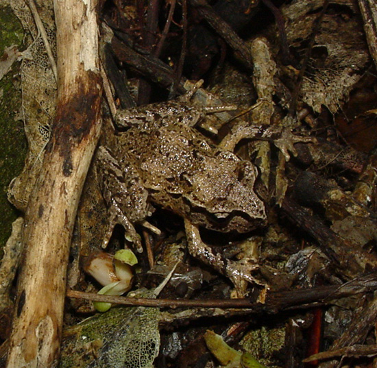
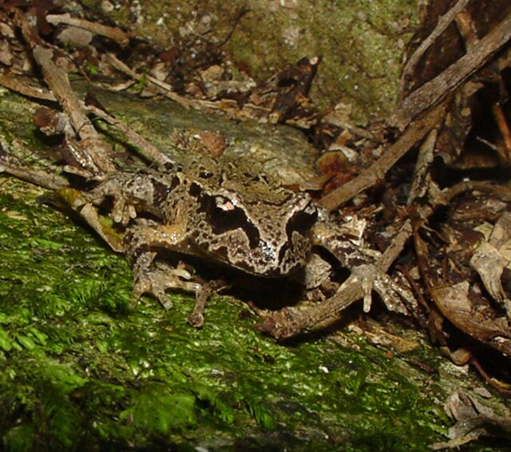
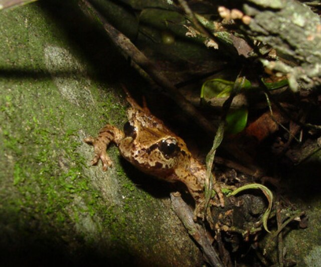

Hamilton's frog



Here are some facts about Hamilton's Frog
- The male remains with the eggs to protect them and allows the tadpoles to climb onto his back where they are kept moist.
- They are mostly light brown in colour, although some green and orange individuals have also been observed.
- This frog was named after harold Hamilton to honor him.
- There is no webbing between the hind toes, and the fingers are not webbed.
- A single dark stripe runs along each side of the head and through the eye.
Back to homepage